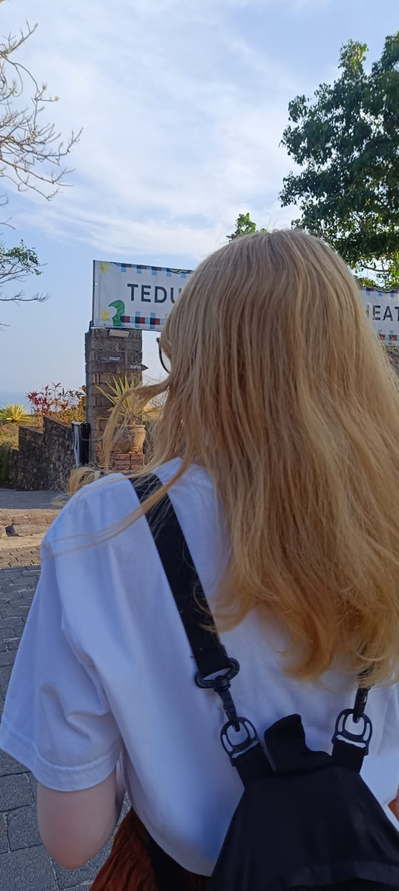

Sedikit Tentang Saya
 Nama saya Ni Made Nadia Anjani, mahasiswa semester tiga di ITB STIKOM Bali yang tumbuh besar di Bali, pulau yang sangat saya banggakan karena keindahan alam dan budayanya. Sejak kecil, rasa ingin tahu mendorong saya untuk terus mengeksplorasi berbagai bidang, terutama IT, yang memberi banyak tantangan dan kepuasan. Saya yakin pengetahuan ini akan membuka peluang besar di masa depan. Selain itu, saya akademisi percaya pentingnya keseimbangan hidup. Di waktu luang, saya menikmati musik, terutama K-pop, dan mengidolakan Jake dari Enhypen selalu memberi inspirasi lewat dedikasinya. Kehadiran kucing peliharaan saya juga menjadi sumber kebahagiaan dan kenyamanan di rumah. Saya suka membaca buku, baik fiksi yang membawa saya ke dunia imajinasi, maupun nonfiksi yang memperluas wawasan. Selain itu, ada satu lagi aspek dalam hidup saya yang selalu memberi kebahagiaan, yaitu makanan. Sebagai orang Bali, saya tentu sangat menyukai kuliner lokal yang kaya akan rempah dan rasa. Berikut adalah beberapa makanan dan minuman kesukaan saya :
-
Matcha
Matcha adalah salah satu favorit saya, terutama karena rasanya yang khas—pahit namun tetap menyegarkan, dengan aroma yang menenangkan. Saya suka menikmati matcha dalam berbagai bentuk, baik itu sebagai minuman seperti latte atau sebagai hidangan penutup seperti es krim dan kue. Rasanya selalu memberi sensasi yang unik dan memanjakan, serta menghadirkan ketenangan setiap kali menikmatinya. Selain lezat, matcha juga memiliki banyak manfaat bagi kesehatan, menjadikannya pilihan yang sempurna saat saya ingin menikmati sesuatu yang menyehatkan namun tetap enak. -
Mintchoco
Saya sangat menyukai mint choco karena perpaduan segarnya mint dengan manisnya cokelat yang selalu memanjakan lidah. Baik dalam bentuk es krim atau cokelat batang, rasanya yang unik selalu memberi kesegaran dan membuat -
Sate Lilit
Sate lilit adalah sate khas Bali yang dibuat dari daging cincang (biasanya ikan atau ayam) yang dicampur dengan bumbu khas, kemudian dililitkan pada batang serai. Rasanya yang gurih dan teksturnya yang lembut membuatnya sangat berbeda dari sate pada umumnya. Saya sangat suka makan sate lilit sebagai camilan atau hidangan utama saat makan bersama keluarga. -
Sushi
Meskipun saya sangat menyukai makanan tradisional Bali, saya juga penggemar berat makanan internasional, salah satunya adalah sushi. Saya suka sushi karena kesegarannya dan kombinasi rasa yang unik antara nasi, ikan mentah, dan berbagai bahan lainnya. Favorit saya adalah salmon sushi karena tekstur dagingnya yang lembut dan rasanya yang gurih. Makan sushi selalu memberi pengalaman yang menyenangkan, dan saya selalu senang mencoba berbagai jenis sushi di restoran Jepang.
Setiap hidangan memiliki makna dan kenangan tersendiri bagi saya. Dari makanan tradisional Bali yang kaya rasa hingga sushi yang segar, semuanya memberi kebahagiaan yang sederhana namun bermakna. Saya percaya bahwa menikmati makanan yang kita sukai adalah salah satu cara terbaik untuk merayakan hidup dan membuat setiap momen terasa lebih istimewa. Jadi, bagi saya, menemukan keseimbangan dalam hidup berarti menikmati hal-hal kecil yang memberi kebahagiaan, seperti musik, hewan, buku, dan tentu saja makanan. Hal-hal sederhana ini adalah bagian dari kehidupan saya yang membuat hari-hari terasa lebih berwarna dan penuh makna.